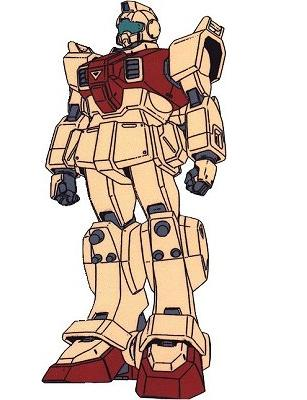

| RGM-79G GM Ground Type High Performance Ground Combat Earth Federation Mobile Suit |
|
|  | |
General and Technical Data |
|
|
Model number: RGM-79[G] Code name: GM Ground Type Unit type: limited production ground combat mobile suit Operator: Earth Federation Dimensions: head height 18.0 meters Weight: empty 53.8 metric tons; max gross 66.0 metric tons Construction: lunar titanium alloy Powerplant: Minovsky type ultracompact fusion reactor, output rated at 1150 kW Propulsion: rocket thrusters: 49000 kg total Performance: thruster acceleration 0.74 G, maximum ground running speed 87 km/h Equipment and design features: sensors, range 6000 meters Fixed armaments: 2 x beam saber, stored in recharge slots in leg racks, hand-carried in use Optional hand armaments: 100mm machinegun, clip-fed, 32 rounds per clip; 305mm bazooka, clip-fed, 7 rounds per clip; arm shield; 3x grenade Magnetic Storage Racks: 3, primary rack on backpack, one additional rack on either hip. |
|
| Technical and Historical Notes | |
|
When the RX-78 Gundam was completed, it was intended purely as an initial-run testbed unit. The data acquired from the V project tests was used in construction of a pair of pre-production mobile suits: The RGM-79E for space combat, and the RGM-79[G] for land combat. The GM Ground Type, as it was thusly named, was in many ways a slightly scaled-down Gundam without the technology for use in space combat. The GM Ground Type's heavy armor and substandard thruster output makes it more of a tank than the later-model RGM-79, and while it isn't quite as maneuverable, it makes up for it with its durability.
The GM Ground Type is armored with lunar titanium, making it extremely resilient against ballistic weapons fire. The Gundam's two beam sabers have been moved into armored storage racks on the GM's knees, making for easy access in cramped quarters. This GM is armed with the same stock 90mm machinegun and 305mm bazooka as most GMs, while the trademark dual 60mm head-mounted vulcans have been removed. Giving the GM Ground Type's tough lunar titanium armoring, the large tower shield present on most other GMs has been replaced with a much smaller shield primarily intended for blocking melee weapons. Once again, however, the GM Ground Type's subpar reactor output denies it the use of a beam rifle, leaving that still a luxury purely for the RX-78. On the bright side, the GM Ground Type is equipped with arid combat gear, allowing it to function at top efficiency in desert and tropical environments.
 |
 RPG quick stats sheet
RPG quick stats sheet | Weapons and Features | |


|
|